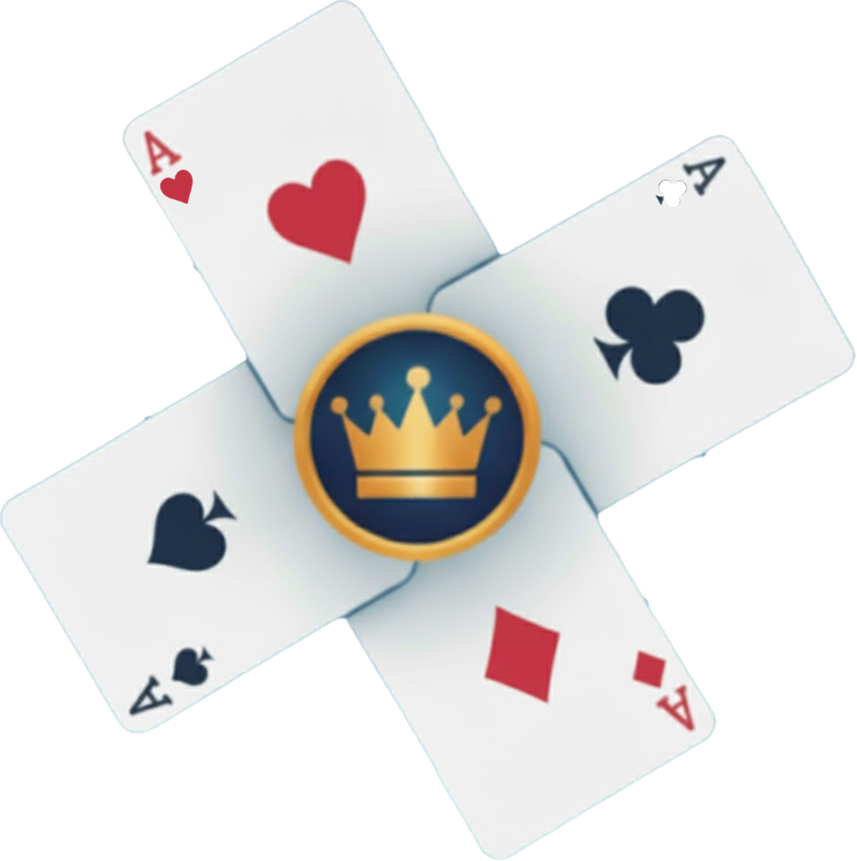

Jogador Virtual Inteligente
IA avançada que joga como um parceiro real

Uma aplicação moderna de Sueca com jogadores virtuais inteligentes, contagem automática de pontos e suporte para jogo híbrido no mundo real.
Disponível para Android (.apk)


Suecada é uma aplicação móvel revolucionária para o jogo tradicional português Sueca.
Desenvolvida com tecnologia de ponta, a aplicação oferece suporte tanto para jogo presencial como virtual, incluindo jogadores autónomos com Inteligência Artificial.
Automatiza completamente a pontuação, gestão de turnos e validação de jogadas, permitindo que te concentres no que realmente importa: a estratégia e a diversão.
Perfeita para torneios familiares ou partidas casuais com amigos, a aplicação guarda estatísticas detalhadas para acompanhares a tua evolução.
IA avançada que joga como um parceiro real
Combina o melhor dos dois mundos: cartas físicas com jogadores virtuais
Acompanha o teu desempenho com estatísticas detalhadas das tuas partidas
Organiza e participa em torneios com amigos e familiares
Tecnologia de visão computacional para detetar cartas automaticamente
Pontuação automática, gestão de turnos e validação de jogadas instantânea
Define os jogadores e escolhe o modo de jogo (presencial, híbrido ou virtual)
A câmara reconhece as cartas jogadas em tempo real (jogo híbrido e presencial)
A aplicação gere pontuações, turnos e estatísticas automaticamente
Faz o download da aplicação e experimenta uma nova forma de jogar Sueca